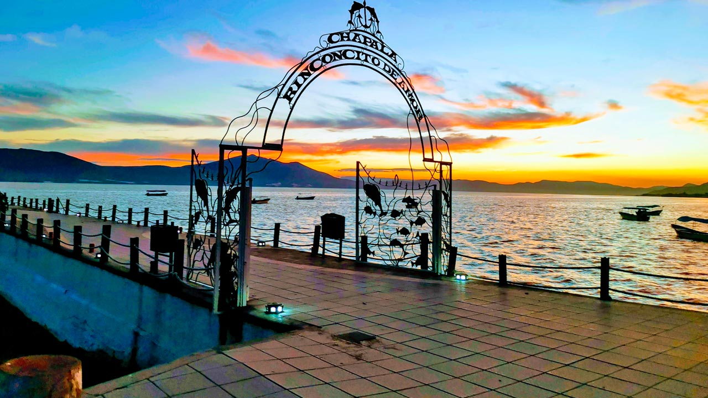

Introducción
Jalisco es un estado con una gran variedad de lugares turísticos. Algunas personas lo visitan por sus ciudades, otras por sus playas y otras por sus pueblos tradicionales y sus paisajes naturales.
Esa diversidad convierte al estado en uno de los destinos más completos de México, ya que ofrece historia, cultura, descanso, gastronomía y naturaleza.
Gracias a esta riqueza, tanto visitantes nacionales como extranjeros encuentran opciones muy distintas dentro de un mismo estado.
Destinos destacados
| Lugar | Característica |
|---|---|
| Guadalajara | Capital del estado y centro cultural muy importante. |
| Puerto Vallarta | Destino de playa reconocido por su paisaje y ambiente turístico. |
| Tequila | Pueblo mágico relacionado con el agave y la bebida tradicional. |
📸 Algunos lugares más conocidos
Ciudad de Guadalajara

Puerto Vallarta

Pueblo de Tequila

| 🌅 Galería turística sugerida |
|---|
|
Chapala
 |
Tlaquepaque

|
🌍 Importancia del turismo
El turismo ayuda a difundir la cultura local, impulsa el comercio y genera movimiento económico en muchas regiones del estado.
Conocer los destinos de Jalisco también es una forma de acercarse a su historia, a su geografía y a sus costumbres.
🗺️ Diversidad de experiencias
En Jalisco se puede visitar una gran ciudad como Guadalajara, descansar en playas como Puerto Vallarta, recorrer pueblos con tradición como Tequila o disfrutar paisajes tranquilos como Chapala.
Esa variedad hace que el turismo del estado sea muy atractivo para personas con distintos intereses, ya sea cultura, naturaleza, descanso o gastronomía.